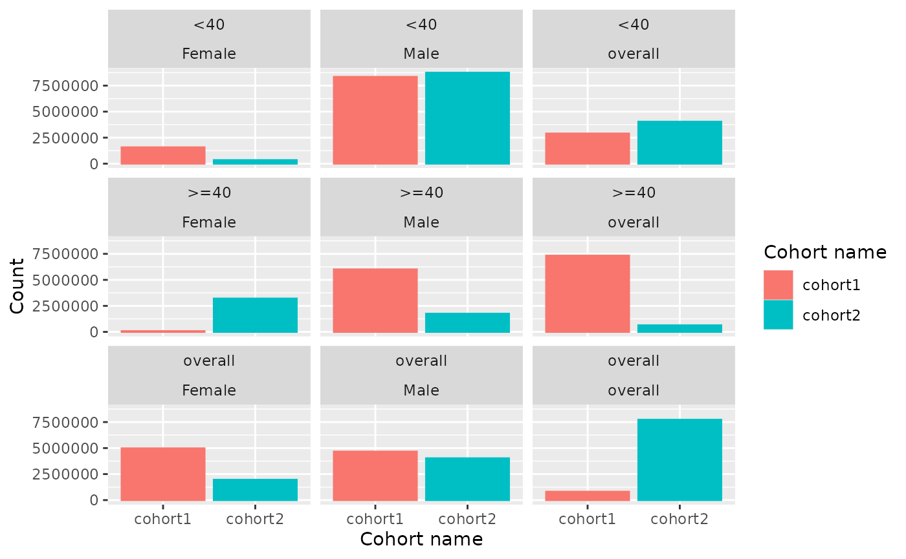

In this vignette we will present the column
retrieval and unite functionalities which
provide useful tools to work with visOmopResults functions and
managing <summarised_result> objects.
Column retrieval functions
Column retrieval functions are designed to simplify the extraction of
specific columns or variables within name-level columns from
<summarised_result> objects. In this section, we will
review the different column functions and provide a use-case
example.
Variables in name-level columns
The following functions are useful for identifying variables stored in name-level pairs:
For example, let’s see which strata are included in a mock
<summarised_result>:
# Set-up
library(visOmopResults)
library(dplyr)
# Create a mock summarized result
result <- mockSummarisedResult()
head(result)
#> # A tibble: 6 × 13
#> result_id cdm_name group_name group_level strata_name strata_level
#> <int> <chr> <chr> <chr> <chr> <chr>
#> 1 1 mock cohort_name cohort1 overall overall
#> 2 1 mock cohort_name cohort1 age_group &&& sex <40 &&& Male
#> 3 1 mock cohort_name cohort1 age_group &&& sex >=40 &&& Male
#> 4 1 mock cohort_name cohort1 age_group &&& sex <40 &&& Female
#> 5 1 mock cohort_name cohort1 age_group &&& sex >=40 &&& Female
#> 6 1 mock cohort_name cohort1 sex Male
#> # ℹ 7 more variables: variable_name <chr>, variable_level <chr>,
#> # estimate_name <chr>, estimate_type <chr>, estimate_value <chr>,
#> # additional_name <chr>, additional_level <chr>
# Get strata columns
strataColumns(result)
#> [1] "age_group" "sex"This function returns the strata columns that would be generated if
result were split by strata.
Settings
The settingsColumns() function returns which settings are linked to a
<summarised_result>:
# Display settings tibble
settings(result)
#> # A tibble: 1 × 4
#> result_id result_type package_name package_version
#> <int> <chr> <chr> <chr>
#> 1 1 mock_summarised_result visOmopResults 0.3.0.900
# Get which settings are present using `settingsColumns()`
settingsColumns(result)
#> [1] "result_type" "package_name" "package_version"Tidy columns
The tidyColumns() function provides the columns that the
# Show tidy result:
tidy(result) |> head()
#> # A tibble: 6 × 13
#> cdm_name cohort_name age_group sex variable_name variable_level count mean
#> <chr> <chr> <chr> <chr> <chr> <chr> <int> <dbl>
#> 1 mock cohort1 overall over… number subje… NA 8.08e5 NA
#> 2 mock cohort1 <40 Male number subje… NA 8.34e6 NA
#> 3 mock cohort1 >=40 Male number subje… NA 6.01e6 NA
#> 4 mock cohort1 <40 Fema… number subje… NA 1.57e6 NA
#> 5 mock cohort1 >=40 Fema… number subje… NA 7.40e4 NA
#> 6 mock cohort1 overall Male number subje… NA 4.66e6 NA
#> # ℹ 5 more variables: sd <dbl>, percentage <dbl>, result_type <chr>,
#> # package_name <chr>, package_version <chr>
# Get the tidy columns with `tidyColumns()`
tidyColumns(result)
#> [1] "cdm_name" "cohort_name" "age_group" "sex"
#> [5] "variable_name" "variable_level" "count" "mean"
#> [9] "sd" "percentage" "result_type" "package_name"
#> [13] "package_version"Use-case
These functionalities can be used in table and plot functions. For instance, let’s plot the number of subjects in each cohort and strata from our mock result.
We’ll first filter the result to focus on the variable of interest,
and then use barPlot() (see vignette on plots for more
information on how to use plotting functions).
result <- result |>
filter(variable_name == "number subjects")
barPlot(
result = result,
x = groupColumns(result),
y = "count",
facet = strataColumns(result),
colour = groupColumns(result)
)
Unite functions
The unite functions serve as the complementary tools to the split
functions (see vignette on tidying
<summarised_result>), allowing you to generate
name-level pair columns from targeted columns within a
<dataframe>.
There are three unite functions that allow to create
group, strata, and additional name-level columns from specified sets of
columns:
For example, to create group_name and group_level columns from a tibble, you can use:
# Create and show mock data
data <- tibble(
denominator_cohort_name = c("general_population", "older_than_60", "younger_than_60"),
outcome_cohort_name = c("stroke", "stroke", "stroke")
)
head(data)
#> # A tibble: 3 × 2
#> denominator_cohort_name outcome_cohort_name
#> <chr> <chr>
#> 1 general_population stroke
#> 2 older_than_60 stroke
#> 3 younger_than_60 stroke
# Unite into group name-level columns
data |>
uniteGroup(cols = c("denominator_cohort_name", "outcome_cohort_name"))
#> # A tibble: 3 × 2
#> group_name group_level
#> <chr> <chr>
#> 1 denominator_cohort_name &&& outcome_cohort_name general_population &&& stroke
#> 2 denominator_cohort_name &&& outcome_cohort_name older_than_60 &&& stroke
#> 3 denominator_cohort_name &&& outcome_cohort_name younger_than_60 &&& strokeThis functions can be helpful when creating your own
<summarised_result>.